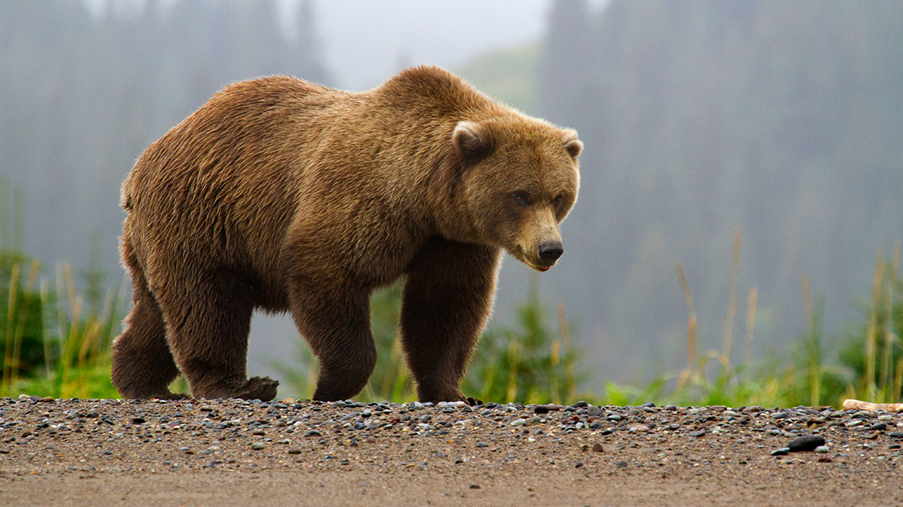
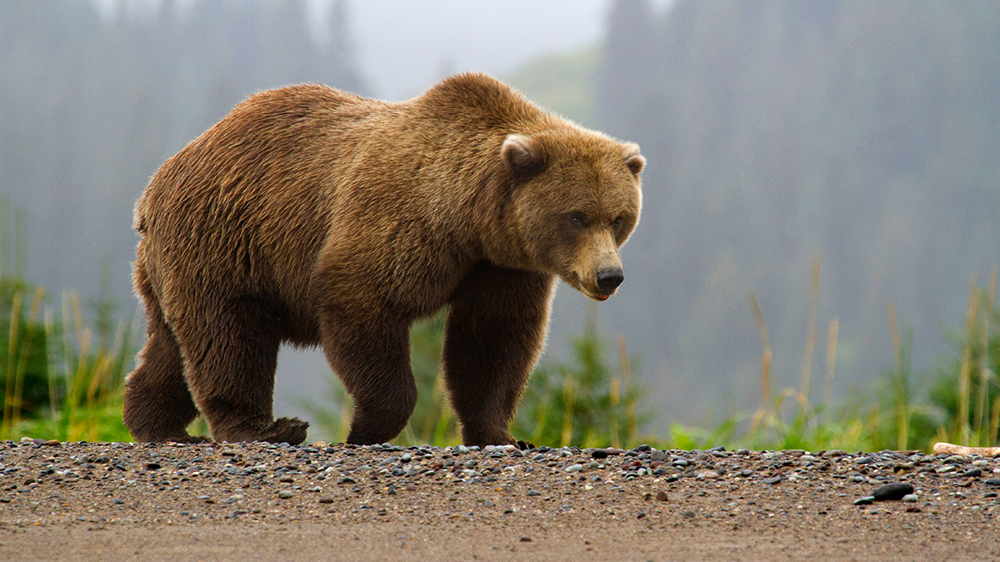

56 km/h
80 – 600 kg
Taimetoit/kala
30 – 35 aastat
Hammastiku ehituse järgi on karu kõigesööja. Valdava osa toidust moodustavad mitmesugused marjad, seened, seemned, kalad, puude lehed ja putukad (suvel põhitoidusena sipelgad). Palukesi läheb mahukasse kõhtu hulganisti. Karu jaoks on eelistatud maiuspalad kaer ja mesi, mida tal aga õnnestub harvemini hankida. Suuri loomi murravad karud üksnes kevadel ja sügisel – enne ja pärast taliuinakut, kui on vaja palju jõudu koguda. Värskele loomale eelistab karu raibet. Mahamurtud loomal süüakse ära keel ja sisikond, liha jäetakse laagerdama. Karupojad sünnivad keset talve. Neid võib olla 1–5, kuid kõige sagedasem on 2 poega. Sündides on nad vaid poole kilogrammi raskused, pimedad ja abitud. Pojad imevad emapiima ja kasvavad kiiresti. Imetamine kestab 4–5 kuud ja selle lõppedes on pojad 7–9 kg raskused. Kevade saabudes lahkuvad nad koos emaga talvekoopast – siis on pojad juba nii tugevad, et jõuavad emaga ette võtta pikki rännakuid. Pruunkaru elab metsades ja tundrates. Pruunkaru taliuinaku kestus varieerub piirkonniti, enamasti vältab see 4–5 kuud. Taliuinakuks valmistudes tõuseb karu kehakaal kuni 35%. Talvitumiseks kasutab karu mäestikupiirkondades looduslikke koopaid, mujal pinnaselohke, varjulisi kohti tuulemurrus. Uinaku ajal karu ainevahetus aeglustub ja kehatemperatuur langeb 3–5 kraadi võrra. Suurima osa uinaku ajal vajaminevast energiast (90%) saadakse rasvkoe lagundamisest. Tiined emased ka poegivad taliuinaku ajal.
Metsas väga palju ohte karul ei olegi. Peamiseks ohustajaks on jahimehed ja inimese tekitatud autoliiklus.